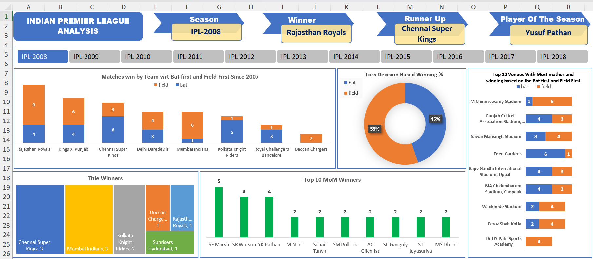

About Me
Hello there! 👋 I'm Siddharth Prajapati, a passionate Data Analyst and aspiring Data Scientist.
I bring a wealth of experience in data analysis, leveraging my expertise to unearth valuable
insights from raw data.
My knack for translating data into actionable recommendations has enabled organizations to make
informed decisions and drive meaningful outcomes.
If you want to learn more about me, just check out my resume below.

My Projects
Build an interactive dashboard using Power BI to provide insights about historical sales.

Dashboard was built to show the season wise summary of the IPL tournament using Microsoft Excel.
The dataset used for this project have the COVID-19 cases recoreded from 24th Feb 2020 to 30th
Apr 2021.

I have build an Python Project to Scrape YouTube data using YouTube Data API.
This is an Capstone Project build using R programming For Google Data Analytics Certification.

Sentiment Analysis is a process of extracting opinions that have different polarities. By
polarities, we mean positive, negative or neutral. It is also known as opinion mining and
polarity detection.